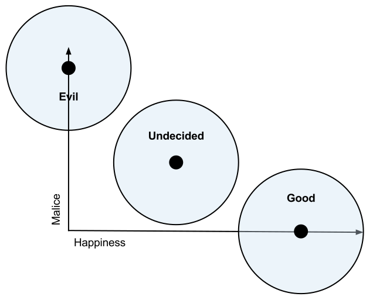

The k-means function type takes the output dataset of the k-means procedure and applies it to new data in order to assign it to clusters.
A new function of type kmeans named <id> can be created as follows:
mldb.put("/v1/functions/"+<id>, {
"type": "kmeans",
"params": {
"modelFileUrl": <Url>
}
})with the following key-value definitions for params:
| Field, Type, Default | Description |
|---|---|
modelFileUrl | URL of the model file (with extension '.kms') to load. This file is created by the |
Functions of this type load their internal state from a dataset, which is identified
with the centroids parameter, which lists one cluster per row, with the columns
providing the coordinates of the centroid of the cluster and the row name being
the name of the cluster (this is the output format of the kmeans.train procedure type).
The select parameter
tells the system how to extract an embedding from the row, and the where
parameter allows only a subset of the clusters to be loaded by the K-Means
function. See the example below for more details.
In the application of the function, the same features as in the centroids
dataset are extracted from the inputs of the function to create a coordinate
vector for the input. The distance from that input to each of the centroids
is then calculated using the metric specified in the configuration, and the
function outputs the value cluster containing the name of cluster that is
the closest to the given centroid.
Functions of this type have a single input called embedding which is a row. The columns that
are expected in this row are the same as the columns in the centroids dataset with
which this function is configured.
These functions have a single output value called cluster, which is the name of the row
in the centroids dataset whose columns describe the point which is closest to the
input according to the metric specified.
As a concrete example, a K-Means function with three clusters, good, evil and undecided
and two input dimensions, happiness and malice, could be represented
as follows:
| Cluster | Happiness | Malice |
|---|---|---|
| Good | 1 | 0 |
| Evil | 0 | 1 |
| Undecided | 0.5 | 0.5 |
Which represents the following situation:

In that case, select would be set to * (the default) and where to true
(the default) in order to enable all clusters. Alternatively, if we wanted to
ignore the undecided class, we could load the K-Means function with where as
rowName() != 'undecided' to get only the good and evil clusters. And to
ignore the Happiness dimension, the K-Means function could be configured with
select as * EXCLUDING (Happiness).
kmeans.train procedure type trains a k-means function.